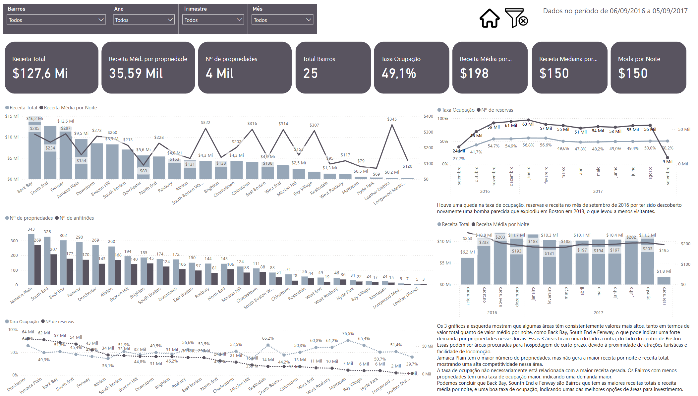

Análise de Investimentos Airbnb em Boston
Sobre o Projeto
Este projeto realiza uma análise aprofundada do mercado de Airbnb em Boston, visando identificar as melhores oportunidades de investimento imobiliário. Boston se destaca como um mercado altamente atrativo devido à sua forte presença universitária, eventos importantes ao longo do ano e diversidade de visitantes, incluindo turistas, estudantes e profissionais em viagem de negócios.
Objetivos do Projeto
- Identificar e analisar as melhores áreas para investimento no Airbnb em Boston
- Avaliar o potencial de retorno sobre investimento em diferentes bairros
- Mapear a competitividade do mercado por região
- Analisar padrões de demanda e sazonalidade
- Avaliar proximidade com transportes públicos e pontos turísticos
Metodologia
Coleta e Análise de Dados
- Período analisado: 06/09/2016 a 05/09/2017
- Fontes de dados:
- Tabela Calendar: Dados de disponibilidade e preços
- Tabela Reviews: Avaliações e feedback dos hóspedes
- Tabela Listings: Informações detalhadas das propriedades
- Ferramentas e processos:
- SQL: Queries complexas e joins entre tabelas
- Power Query: Limpeza e transformação dos dados
- Power BI: Visualizações e análises com DAX
- PowerPoint: Apresentação dos resultados e insights
Métricas Analisadas
- Valor médio por noite por bairro e tipo de propriedade
- Receita total e média por propriedade em cada região
- Distribuição e densidade de tipos de propriedades
- Concentração de anfitriões por área
- Análise de proximidade com transportes públicos
- Correlação entre localização e pontos turísticos
- Taxa de ocupação média por região
- Número total de propriedades por bairro
Análise da Cidade
Boston se destaca como um mercado excepcional para investimentos em Airbnb devido a diversos fatores:
- Grande concentração de universidades renomadas
- Eventos importantes distribuídos ao longo do ano
- Forte turismo histórico e cultural
- Centro de negócios importante na costa leste
- Infraestrutura de transporte bem desenvolvida
Principais Descobertas
- As três áreas mais promissoras para investimento são:
- Back Bay: Maior rentabilidade e proximidade com atrações
- Beacon Hill: Alto valor por noite e demanda constante
- South End: Melhor custo-benefício e potencial de valorização
- Apartamentos de 2 quartos apresentam a melhor relação demanda/rentabilidade
- Taxa de ocupação média de 75% ao ano nas áreas premium
- ROI médio estimado de 12% ao ano para propriedades bem localizadas
Tecnologias Utilizadas
- Power BI
- SQL
- PowerPoint